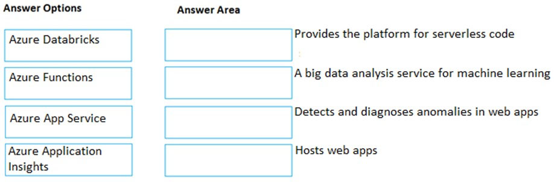
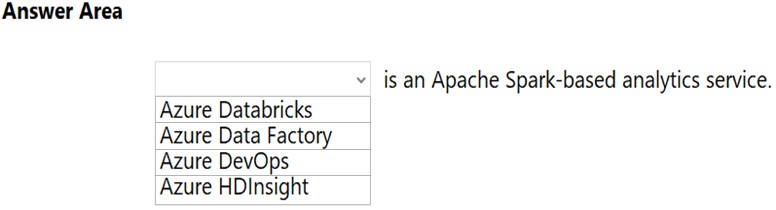
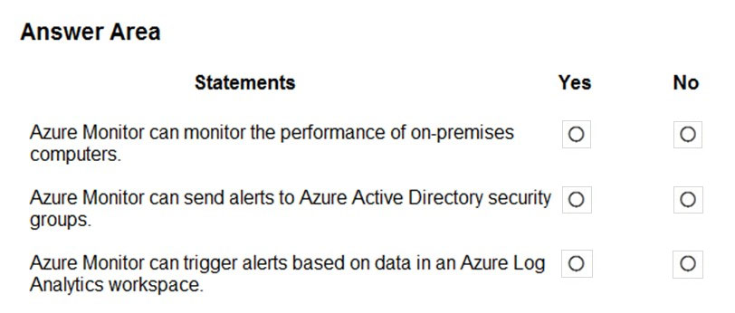
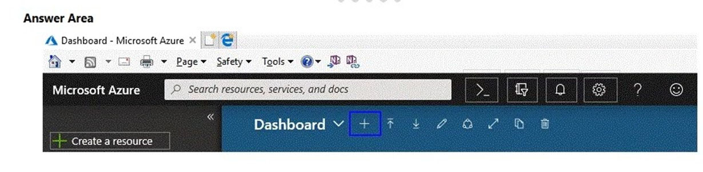

Azure Fundamentals Exam Part 3
101. Note: This question is part of a series of questions that present the same scenario. Each question in the series contains a unique solution that might meet the stated goals. Some question sets might have more than one correct solution, while others might not have a correct solution. After you answer a question in this section, you will NOT be able to return to it. As a result, these questions will not appear in the review screen. An Azure administrator plans to run a PowerShell script that creates Azure resources. You need to recommend which computer configuration to use to run the script. Solution: Run the script from a computer that runs macOS and has PowerShell Core 6.0 installed. Does this meet the goal?
A. Yes
B. No
102. HOTSPOT -
You need to view a list of planned maintenance events that can affect the availability of an Azure subscription.
Which blade should you use from the Azure portal? To answer, select the appropriate blade in the answer area.
Hot Area:

 On the Help and Support blade, there is a Service Health option. If you click Service Health, a new blade opens. The Service Health blade contains the Planned
Maintenance link which opens a blade where you can view a list of planned maintenance events that can affect the availability of an Azure subscription.
On the Help and Support blade, there is a Service Health option. If you click Service Health, a new blade opens. The Service Health blade contains the Planned
Maintenance link which opens a blade where you can view a list of planned maintenance events that can affect the availability of an Azure subscription.
103. DRAG DROP -
Match the Azure service to the correct definition.
Instructions: To answer, drag the appropriate Azure service from the column on the left to its description on the right. Each service may be used once, more than once, or not at all.
NOTE: Each correct match is worth one point.
Select and Place:


104. DRAG DROP -
Match the Azure service to the correct description.
Instructions: To answer, drag the appropriate Azure service from the column on the left to its description on the right. Each service may be used once, more than once, or not at all.
NOTE: Each correct match is worth one point.
Select and Place:


105. HOTSPOT -
You need to identify which blades in the Azure portal must be used to perform the following tasks:
✑ View security recommendations.
✑ Monitor the health of Azure services.
✑ Browse available virtual machine images.
Which blade should you identify for each task? To answer, select the appropriate options in the answer area.
NOTE: Each correct selection is worth one point.
Hot Area:


106. Note: This question is part of a series of questions that present the same scenario. Each question in the series contains a unique solution that might meet the stated goals. Some question sets might have more than one correct solution, while others might not have a correct solution. After you answer a question in this section, you will NOT be able to return to it. As a result, these questions will not appear in the review screen. You have an Azure environment. You need to create a new Azure virtual machine from a tablet that runs the Android operating system. Solution: You use Bash in Azure Cloud Shell. Does this meet the goal?
A. Yes
B. No
107. You have an on-premises application that sends email notifications automatically based on a rule. You plan to migrate the application to Azure. You need to recommend a serverless computing solution for the application. What should you include in the recommendation?
A. a web app
B. a server image in Azure Marketplace
C. a logic app
D. an API app
108. You plan to deploy a website to Azure. The website will be accessed by users worldwide and will host large video files. You need to recommend which Azure feature must be used to provide the best video playback experience. What should you recommend?
A. an application gateway
B. an Azure ExpressRoute circuit
C. a content delivery network (CDN)
D. an Azure Traffic Manager profile
109. Your company plans to deploy several million sensors that will upload data to Azure. You need to identify which Azure resources must be created to support the planned solution. Which two Azure resources should you identify? Each correct answer presents part of the solution. NOTE: Each correct selection is worth one point.
A. Azure Data Lake
B. Azure Queue storage
C. Azure IoT Hub
D. Azure Notification Hubs
110. You have an Azure web app. You need to manage the settings of the web app from an iPhone. What are two Azure management tools that you can use? Each correct answer presents a complete solution. NOTE: Each correct selection is worth one point.
A. Azure CLI
B. the Azure portal
C. Azure Cloud Shell
D. Windows PowerShell
E. Azure Storage Explorer
111. Your company plans to deploy an Artificial Intelligence (AI) solution in Azure. What should the company use to build, test, and deploy predictive analytics solutions?
A. Azure Logic Apps
B. Azure Machine Learning Designer
C. Azure Batch
D. Azure Cosmos DB
112. HOTSPOT -
For each of the following statements, select Yes if the statement is true. Otherwise, select No.
NOTE: Each correct selection is worth one point.
Hot Area:

113. What can you use to automatically send an alert if an administrator stops an Azure virtual machine?
A. Azure Advisor
B. Azure Service Health
C. Azure Monitor
D. Azure Network Watcher
114. DRAG DROP -
Match the Azure services to the correct descriptions.
Instructions: To answer, drag the appropriate Azure service from the column on the left to its description on the right. Each service may be used once, more than once, or not at all.
NOTE: Each correct match is worth one point
Select and Place:


115. You have an Azure environment. You need to create a new Azure virtual machine from a tablet that runs the Android operating system. What are three possible solutions? Each correct answer presents a complete solution. NOTE: Each correct selection is worth one point.
A. Use Bash in Azure Cloud Shell.
B. Use PowerShell in Azure Cloud Shell.
C. Use the PowerApps portal.
D. Use the Security & Compliance admin center.
E. Use the Azure portal.
116. A team of developers at your company plans to deploy, and then remove, 50 virtual machines each week. All the virtual machines are configured by using Azure Resource Manager templates. You need to recommend which Azure service will minimize the administrative effort required to deploy and remove the virtual machines. What should you recommend?
A. Azure Reserved Virtual Machine (VM) Instances
B. Azure DevTest Labs
C. Azure virtual machine scale sets
D. Microsoft Managed Desktop
117. HOTSPOT -
For each of the following statements, select Yes if the statement is true. Otherwise, select No.
NOTE: Each correct selection is worth one point.
Hot Area:

118. Note: This question is part of a series of questions that present the same scenario. Each question in the series contains a unique solution that might meet the stated goals. Some question sets might have more than one correct solution, while others might not have a correct solution. After you answer a question in this section, you will NOT be able to return to it. As a result, these questions will not appear in the review screen. You have an Azure subscription named Subscription1. You sign in to the Azure portal and create a resource group named RG1. From Azure documentation, you have the following command that creates a virtual machine named VM1. az vm create --resource-group RG1 --name VM1 --image UbuntuLTS --generate-ssh-keys You need to create VM1 in Subscription1 by using the command. Solution: From the Azure portal, launch Azure Cloud Shell and select PowerShell. Run the command in Cloud Shell. Does this meet the goal?
A. Yes
B. No
119. Note: This question is part of a series of questions that present the same scenario. Each question in the series contains a unique solution that might meet the stated goals. Some question sets might have more than one correct solution, while others might not have a correct solution. After you answer a question in this section, you will NOT be able to return to it. As a result, these questions will not appear in the review screen. You have an Azure subscription named Subscription1. You sign in to the Azure portal and create a resource group named RG1. From Azure documentation, you have the following command that creates a virtual machine named VM1. az vm create --resource-group RG1 --name VM1 --image UbuntuLTS --generate-ssh-keys You need to create VM1 in Subscription1 by using the command. Solution: From a computer that runs Windows 10, install Azure CLI. From PowerShell, sign in to Azure and then run the command. Does this meet the goal?
A. Yes
B. No
120. Note: This question is part of a series of questions that present the same scenario. Each question in the series contains a unique solution that might meet the stated goals. Some question sets might have more than one correct solution, while others might not have a correct solution. After you answer a question in this section, you will NOT be able to return to it. As a result, these questions will not appear in the review screen. You have an Azure subscription named Subscription1. You sign in to the Azure portal and create a resource group named RG1. From Azure documentation, you have the following command that creates a virtual machine named VM1. az vm create --resource-group RG1 --name VM1 --image UbuntuLTS --generate-ssh-keys You need to create VM1 in Subscription1 by using the command. Solution: From a computer that runs Windows 10, install Azure CLI. From a command prompt, sign in to Azure and then run the command. Does this meet the goal?
A. Yes
B. No
121.HOTSPOT -
Several support engineers plan to manage Azure by using the computers shown in the following table:

You need to identify which Azure management tools can be used from each computer.
What should you identify for each computer? To answer, select the appropriate options in the answer area.
NOTE: Each correct selection is worth one point.
Hot Area:


122. HOTSPOT -
To complete the sentence, select the appropriate option in the answer area.
Hot Area:

123.HOTSPOT -
To complete the sentence, select the appropriate option in the answer area.
Hot Area:

124. DRAG DROP -
Match the Azure service to the correct description.
Instructions: To answer, drag the appropriate Azure service from the column on the left to its description on the right. Each service may be used once, more than once, or not at all.
NOTE: Each correct selection is worth one point.
Select and Place:

125. Note: This question is part of a series of questions that present the same scenario. Each question in the series contains a unique solution that might meet the stated goals. Some question sets might have more than one correct solution, while others might not have a correct solution. After you answer a question in this section, you will NOT be able to return to it. As a result, these questions will not appear in the review screen. An Azure administrator plans to run a PowerShell script that creates Azure resources. You need to recommend which computer configuration to use to run the script. Solution: Run the script from a computer that runs Windows 10 and has the Azure PowerShell module installed. Does this meet the goal?
A. Yes
B. No
126. Your company has several business units. Each business unit requires 20 different Azure resources for daily operation. All the business units require the same type of Azure resources. You need to recommend a solution to automate the creation of the Azure resources. What should you include in the recommendations?
A. an Azure web app
B. virtual machine scale sets
C. the Azure API Management service
D. management groups
127. DRAG DROP - Match the Azure service to the correct definition. Instructions: To answer, drag the appropriate Azure service from the column on the left to its description on the right. Each service may be used once, more than once, or not at all. NOTE: Each correct selection is worth one point. Select and Place: 
128. DA team of developers at your company plans to deploy, and then remove, 50 customized virtual machines each week. Thirty of the virtual machines run Windows Server 2016 and 20 of the virtual machines run Ubuntu Linux. You need to recommend which Azure service will minimize the administrative effort required to deploy and remove the virtual machines. What should you recommend?
A. Azure Reserved Virtual Machines (VM) Instances
B. Azure virtual machine scale sets
C. Azure DevTest Labs
D. Microsoft Managed Desktop
129. A support engineer plans to perform several Azure management tasks by using the Azure CLI. You install the CLI on a computer. You need to tell the support engineer which tools to use to run the CLI. Which two tools should you instruct the support engineer to use? Each correct answer presents a complete solution. NOTE: Each correct selection is worth one point.
A. Command Prompt
B. Azure Resource Explorer
C. Windows PowerShell
D. Windows Defender Firewall
E. Network and Sharing Center
130. Note: This question is part of a series of questions that present the same scenario. Each question in the series contains a unique solution that might meet the stated goals. Some question sets might have more than one correct solution, while others might not have a correct solution. After you answer a question in this section, you will NOT be able to return to it. As a result, these questions will not appear in the review screen. You have an Azure environment. You need to create a new Azure virtual machine from a tablet that runs the Android operating system. Solution: You use PowerShell in Azure Cloud Shell. Does this meet the goal?
A. Yes
B. No
131. Note: This question is part of a series of questions that present the same scenario. Each question in the series contains a unique solution that might meet the stated goals. Some question sets might have more than one correct solution, while others might not have a correct solution. After you answer a question in this section, you will NOT be able to return to it. As a result, these questions will not appear in the review screen. You have an Azure environment. You need to create a new Azure virtual machine from a tablet that runs the Android operating system. Solution: You use the PowerApps portal. Does this meet the goal?
A. Yes
B. No
132. Note: This question is part of a series of questions that present the same scenario. Each question in the series contains a unique solution that might meet the stated goals. Some question sets might have more than one correct solution, while others might not have a correct solution. After you answer a question in this section, you will NOT be able to return to it. As a result, these questions will not appear in the review screen. You have an Azure environment. You need to create a new Azure virtual machine from a tablet that runs the Android operating system. Solution: You use the Azure portal. Does this meet the goal?
A. Yes
B. No
133. HOTSPOT - To complete the sentence, select the appropriate option in the answer area. Hot Area: 
134. HOTSPOT - For each of the following statements, select Yes if the statement is true. Otherwise, select No. NOTE: Each correct selection is worth one point. Hot Area: 
135. Which Azure service provides a set of version control tools to manage code?
A. Azure Repos
B. Azure DevTest Labs
C. Azure Storage
D. Azure Cosmos DB
136. HOTSPOT - You need to manage Azure by using Azure Cloud Shell. Which Azure portal icon should you select? To answer, select the appropriate icon in the answer area. Hot Area: 
137. You have a virtual machine named VM1 that runs Windows Server 2016. VM1 is in the East US Azure region. Which Azure service should you use from the Azure portal to view service failure notifications that can affect the availability of VM1?
A. Azure Service Fabric
B. Azure Monitor
C. Azure virtual machines
D. Azure Advisor
138. Note: This question is part of a series of questions that present the same scenario. Each question in the series contains a unique solution that might meet the stated goals. Some question sets might have more than one correct solution, while others might not have a correct solution. After you answer a question in this section, you will NOT be able to return to it. As a result, these questions will not appear in the review screen. An Azure administrator plans to run a PowerShell script that creates Azure resources. You need to recommend which computer configuration to use to run the script. Solution: Run the script from a computer that runs Linux and has the Azure CLI tools installed. Does this meet the goal?
A. Yes
B. No
139. Note: This question is part of a series of questions that present the same scenario. Each question in the series contains a unique solution that might meet the stated goals. Some question sets might have more than one correct solution, while others might not have a correct solution. After you answer a question in this section, you will NOT be able to return to it. As a result, these questions will not appear in the review screen. An Azure administrator plans to run a PowerShell script that creates Azure resources. You need to recommend which computer configuration to use to run the script. Solution: Run the script from a computer that runs Chrome OS and uses Azure Cloud Shell. Does this meet the goal?
A. Yes
B. No
140. HOTSPOT -
For each of the following statements, select Yes if the statement is true. Otherwise, select No.
NOTE: Each correct selection is worth one point.
Hot Area:

141. HOTSPOT -
For each of the following statements, select Yes if the statement is true. Otherwise, select No.
NOTE: Each correct selection is worth one point.
Hot Area:
142. HOTSPOT -
For each of the following statements, select Yes if the statement is true. Otherwise, select No.
NOTE: Each correct selection is worth one point.
Hot Area:
143. HOTSPOT -
For each of the following statements, select Yes if the statement is true. Otherwise, select No.
NOTE: Each correct selection is worth one point.
Hot Area:
144. HOTSPOT -
For each of the following statements, select Yes if the statement is true. Otherwise, select No.
NOTE: Each correct selection is worth one point.
Hot Area:
145. HOTSPOT -
For each of the following statements, select Yes if the statement is true. Otherwise, select No.
NOTE: Each correct selection is worth one point.
Hot Area: